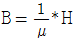
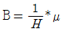
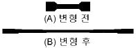
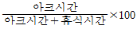
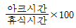
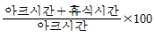
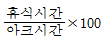

침투비파괴검사기능사 (2014-10-11 기출문제)
1과목: 침투탐상시험법(대략구분)
1. 비파괴검사법 중 대상 물체가 전도체인 경우에만 검사가 가능한 시험법은?
- 침투탐상시험
- 방사선투과시험
- 초음파탐상시험
- 와전류탐상시험
(정답률: 95%)

2. 누설검사에 이용되는 가압 기체가 아닌 것은?
- 공기
- 황산가스
- 헬륨가스
- 암모니아가스
(정답률: 75%)
3. 초음파탐상시험법을 원리에 따라 분류할 때 포함되지 않는 것은?
- 투과법
- 공진법
- 종파법
- 펄스반사법
(정답률: 54%)
4. 자속밀도(B)와 자화세기(H)의 관계식으로 옳은 것은? (단. μ는 투자율이다.)


- B=μ2*H2
- B=μ*H
(정답률: 65%)
5. 방사선투과시험에 대한 설명으로 틀린 것은?
- 체적결함에 대한 검출감도가 높다.
- 오스테나이트 스테인리스강에 적용이 곤란하다.
- 결함의 종류 및 형상에 대한 정보를 알 수 있다.
- 건전부와 결함부에 대한 투과선량의 차이에 따라 필름 상의 농도차를 이용하는 시험방법이다.
(정답률: 75%)
6. 누설검사에서 실제로 가장 많이 사용되는 추적가스는?
- 공기
- 산소
- 암모니아
- 헬륨
(정답률: 71%)
7. 표면근처의 결함검출. 박막두께측정 및 재질 식별 등의 검사가 가능한 비파괴시험법은?
- 자분탐상시험
- 침투탐상시험
- 와전류탐상시험
- 음향방출시험
(정답률: 72%)
8. 침투탐상시험시 유화제의 적용 시간을 정상 시간보다 오래두면 어떤 검사 결과가 나타나는가?(오류 신고가 접수된 문제입니다. 반드시 정답과 해설을 확인하시기 바랍니다.)
- 결함지시모양이 더욱 선명하게 나타난다.
- 가늘고 얕은 결함지시모양을 읽기 쉽다.
- 세척 후에도 과잉 세척액이 남는다.
- 전혀 결함이 나타나지 않는다.
(정답률: 57%)
9. 방사선투과시험과 비교하여 자분탐상시험의 특징을 설명한 것으로 옳지 않은 것은?
- 모든 재료에 적용이 가능하다.
- 탐상이 비교적 빠르고 간단한 편이다.
- 표면 및 표면 바로 밑의 균열검사에 적합하다.
- 결함모양이 표면에 직접 나타나므로 육안으로 관찰할 수 있다.
(정답률: 78%)
10. 초음파탐상기에 요구되는 성능 중 수신된 초음파 펄스의 음압과 브라운관에 나타난 에코 높이의 관계를 나타내는 것은?
- 시간축의 직선성
- 분해능
- 증폭의 직선
- 감도
(정답률: 64%)
11. 필름특성곡선에 대한 설명 중 옳은 것은?
- 필름의 종류에 따른 현상시간의 변화를 나타낸 곡선
- 필름을 투과하는 방사선의 세기 또는 투과비율을 나타낸 곡선
- 필름에 조사된 방사선량과 사진농도와의 관계를 나타낸 곡선
- 필름의 종류에 따른 입도특성을 나타낸 곡선
(정답률: 64%)
12. 음향방출검사에서 관찰되는 AE신호파형으로 짝지어진 것은?
- 연속형-돌발형
- 연속형-회전형
- 돌발형-회전형
- 돌발형-톱니형
(정답률: 61%)
13. 주강품에 대한 방사선투과시험에서 발견할 수 없는 결함은?
- 슬래그혼
- 블로우홀
- 수축공
- 라미네이션
(정답률: 72%)
14. 시험체 표면에 넓고 얇게 발생한 결함의 검출에 수세성 형광 침투액의 적용이 적절하지 않은 이유는?
- 세척처리가 부족하여 결함 주위에 지시 모양이 생기기 쉽기 때문이다.
- 세척처리로 인해 결함에 침투해 있는 침투액이 씻겨나가기 쉽기 때문이다.
- 침투액의 점도가 높아 표면에 잔류하기 쉽고. 세척처리가 어렵기 때문이다.
- 결함의 지시모양이 표면의 요철에 의한 지시와 차이가 나기 쉽기 때문이다.
(정답률: 70%)
15. 용접시 개선면 검사. 용접 중간층 표면검사. 용접 완료후의 표면검사 다음 단계로 침투탐상검사가 요구될 때 휴대가 용이하는 등 가장 적합하게 사용할 수 있는 검사법은?
- 건식현상법에 의한 수세성 형광침투탐상검사
- 속건식현상법에 의한 용제제거성 염색침투탐상검사
- 무현상법에 의한 용제제거성 형광침투탐상검사
- 건식현상법에 의한 후유화성 형광침투탐상검사
(정답률: 74%)
16. 침투탐상시험에서 후유화성과 수세성의 차이를 구별하는 가장 주된 내용은?
- 물이 포함되어 있는지의 여부
- 알루미늄 합금에 사용할 수 있는지의 여부
- 침투액에 유화제가 포함되어 있는지의 여부
- 현상하기 전 표면의 과잉침투액 제거 필요여부
(정답률: 73%)
17. 5개 별모양의 균열이 존재하고. 세척성능을 점검하기 위해 두 개의 영역으로 분리된 침투탐상 시험편은 무엇인가?
- A형 대비시험편
- PSM 모니터패널
- B형 대비시험편
- C형 대비시험편
(정답률: 57%)
18. 용제제거성 침투제 도포 후. 현상전에 잉여침투제를 제거하는 제일 좋은 방법은?
- 용제제거성 스프레이를 시편에 직접 분사한다.
- 물에 담가 초음파 세척기를 가동시킨다.
- 식기세척용 세제를 물에 풀고. 스폰지로 거품을 내어 닦아 낸다.
- 세척제를 스며들게 한 천 또는 종이로 닦아낸다.
(정답률: 78%)
19. 다음 중 암실의 밝기를 측정하기 위한 장비는?
- 농도계
- 열량계
- 조도계
- 자외선강도계
(정답률: 85%)
20. 무관련지시란 침투탐상시험 때 나타난 어떤 지시를 묘사한 것이다. 다음 중 어떤 것이 무관련지시인가?
- 외부균열에 의하여 생긴 지시
- 응력 또는 임계부식에 의하여 생긴 지시
- 부품의 형태 또는 구조에 의하여 생긴 지시
- 연마균열(grinding cracks)에 의하여 생긴 지시
(정답률: 59%)
2과목: 침투탐상관련규격(대략구분)
21. 침투탐상시험에서 일반적으로 흰색의 배경에 빨간색의 대조(contrast)를 이루게 하여 관찰하는 침투액과 현상제의 조합으로 옳은 것은?
- 염색침투액 – 무현상
- 염색침투액 – 습식현상제
- 형광침투액 – 건식현상제
- 형광침투액 – 습식현상제
(정답률: 72%)
22. 다음 중 모세관의 상승높이와 비례하는 것은?
- 표면장력
- 접촉각
- 비중
- 모세관직경
(정답률: 58%)
23. 침투제가 그 역할을 수행하기 위한 주된 현상은?
- 건조
- 세척 작용
- 후유화 현상
- 모세관 현상
(정답률: 87%)
24. 침투탐상검사에서 현상제를 선택하는 기준으로 적절한 것은?
- 용접부 검사에는 습식 현상제가 효과적이다.
- 작업시간 단축을 위해 무현상법을 적용한다.
- 거친 표면에는 습식현상제가 효과적이다.
- 구조물 부분탐상에는 속건식현상제가 효과적이다..
(정답률: 48%)
25. 다음 중 침투탐상검사 방법과 적용 시험품의 연결이 옳은 것은?
- 수세성침투탐상 – 대형 구조물 부분탐상
- 수세성침투탐상 – 석유저장탱크 용접부
- 용제제거성침투탐상 – 대형 구조물 검사
- 용제제거성침투탐상 – 용접 개선면 검사
(정답률: 52%)
26. 침투탐상시험에 사용되는 현상제의 특징이 아닌 것은?
- 침투액을 분산시키는 능력이 우수하여야 한다.
- 화학적으로 안정된 백색 미분말을 주로 사용한다.
- 형광침투액 사용시 현상제는 형광성을 가져야 한다.
- 건식현상제는 주로 산화규소 분말로 구성되어 있다.
(정답률: 62%)
27. 침투탐상시험에서 현상이 잘 되었을 때 나타난 결함지시모양을 실제 결함과의 크기를 비교한 것으로 가장 옳은 설명은?
- 결함지시모양의 크기는 항상 실제 결함 크기와 같다.
- 결함지시모양의 크기는 항상 실제 결함 크기보다 작다.
- 결함지시모양의 크기는 실제 결함 크기보다 크거나 같다.
- 결함지시모양의 크기는 실제 결함 크기보다 작거나 같다.
(정답률: 77%)
28. 침투탐상 시험방법 및 침투지시모양의 분류(KS B 0816)에 따른 탐상제 관리에 대한 설명으로 틀린 것은?
- 기준 탐상제 및 사용하지 않는 탐상제는 용기에 밀폐하여 냉암소에 보관한다.
- 탐상제를 개방형의 장치에서 사용할 때는 먼지. 불순물의 혼입. 탐상제의 비산을 방지하도록 처리하여야 한다.
- 수세성 침투액. 세척액 및 속건식 현상제는 개방형 용기에 보관하여야 한다.
- 습식 및 속건식 현상제는 소정의 농도로 유지하여야 한다.
(정답률: 82%)
29. 항공우주용 기기의 침투탐상 검사방법(KS W 0914)에서 공정 제한 사항으로 틀린 것은?
- 항공 우주용 제품의 최종 수령 검사에는 형광침투액 계통의 침투액을 사용할 수 없다.
- 염색침투액을 사용하는 검사는 동일한 면에 대하여 형광침투액을 사용하는 검사 전에 사용할 수 없다.
- 건식 및 수용성 현상제는 염색침투액에 사용할 수 없다.
- 터진 엔진의 중요 부품 정비검사는 후유화성 형광침투액과 친수성 유화제를 사용한다.
(정답률: 34%)
30. 항공 우주용 기기의 침투탐상 검사방법(KS W 0914)에서 사용 중인 유화제의 제거성은 최대 얼마의 주기마다 검사하여야 하는가?
- 일 1회
- 주 1회
- 월 1회
- 연 1회
(정답률: 59%)
31. 침투탐상 시험방법 및 침투 지시 모양의 분류(KS B 0816)에 따라 침투 지시 모양이 동일선상이고 상호간의 거리가 몇 mm이하일 때 연속 침투 지시 모양으로 규정하고 있는 가?
- 1
- 2
- 3
- 4
(정답률: 86%)
32. 침투탐상 시험방법 및 침투지시모양의 분류(KS B 0816)에 따라 대비시험편을 사용하는 경우로 가장 부적합한 것은?
- 탐상제의 성능 비교
- 탐상조작 조건의 결정
- 탐상조작 적부의 점검
- 시험편의 화학성분 결정
(정답률: 69%)
33. 침투탐상 시험방법 및 침투지시모양의 분류(KS B 0816)에서 규정한 자외선 조사장치의 강도와 파장으로 옳은 것은?
- 시험체 표면에서 1000㎼/cm2 이상 및 320~400㎚인 자외성 파장을 만족해야 한다.
- 시험실에서 1000㎼/cm2 이하 및 320~400㎚이하인 자외선 파장을 만족해야 한다.
- 시험실에서 800㎼/cm2 이상 및 320~400㎚이하인 자외선 파장을 만족해야 한다.
- 시험체 표면에서 800㎼/cm2 이상 및 320~400㎚인 자외성 파장을 만족해야 한다.
(정답률: 69%)
34. 침투탐상 시험방법 및 침투지시모양의 분류(KS B 0816)에서 현상처리 후에 건조과정이 필요한 탐상방법은 무엇인가?
- FB-W
- FA-D
- FC-S
- FB-S
(정답률: 51%)
35. 항공우주용 기기의 침투탐상 검사방법(KS W 0914)에서 침투액의 적용에 대한 설명으로 틀린 것은?
- 침투액의 침투시간은 특별한 지시가 없는 한 최소 10분이다.
- 침투액의 침투시간이 2시간을 초과하면 건조되지 않도록 다시 도포한다.
- 침투액을 침지법으로 적용할 경우에는 침지시간은 침투시간의 1/3이상으로 한다.
- 침투시간 중 침투액이 국부적으로 모이지 않도록 시험품을 회전시키거나 움직이게 한다.
(정답률: 39%)
36. 항공우주용 기기의 침투탐상 검사방법(KS W 0914)에서 규정한 침투액의 제거에서 방법A의 공정 중 수동 스프레이법의 부가 공기압으로 옳은 것은?
- 최소 172 kPa
- 최대 172 kPa
- 최소 275 kPa
- 최대 275 kPa
(정답률: 27%)
37. 침투탐상 시험방법 및 침투지시모양의 분류(KS B 0816)에서 규정한 세척 및 제거에 대한 설명 중 옳은 것은?
- 형광 침투액을 사용할 경우 수온은 특별한 규정이 없을 때는 5~50℃로 한다.
- 염색침투액은 제거처리 후 깨끗한 헝겊으로 닦아 세척을 확인한다.
- 제거처리는 세척액을 침지할 때 효과적이다.
- 세척 효과를 위해 수압은 300 kPa 이상으로 한다.
(정답률: 73%)
38. 항공우주용 기기의 침투탐상 검사방법(KS W 0914)에 따라 샘플링검사에 합격된 로트의 표시방법으로 옳은 것은?
- 별도의 표시를 하지 않는다.
- 착색의 경우 밤색 염료를 사용한다.
- 에칭의 경우 전수검사와 똑같은 방법으로 표시한다.
- 각인의 경우 기호 P를 타원으로 둘러싼 표시를 한다.
(정답률: 70%)
39. 항공우주용 기기의 침투탐상 검사방법(KS W 0914)에서 종류 C는 어떤 현상제인가?
- 수현탁성 현상제
- 수용성 현상제
- 속건성 현상제
- 건식분말 현상제
(정답률: 38%)
40. 침투탐상 시험방법 및 침투지시모양의 분류(KS B 0816)에서 사용하는 탐상제 중 침투액의 제거방법에서 유기용제를 사용하는 방법의 기호는?
- A
- B
- C
- D
(정답률: 56%)
3과목: 금속재료일반 및 용접일반(대략구분)
41. 침투탐상 시험방법 및 침투지시모양의 분류(KS B 0816)에서 염색 침투 탐상시 자연광 또는 백색광 아래에서의 조도는?
- 시험면에서 500㏓이하
- 시험면에서 500㏓이상
- 시험면에서 10W/m2이상
- 시험면에서 10W/m2이하
(정답률: 70%)
42. 침투탐상 시험방법 및 침투지시모양의 분류(KS B 0816)에서 규정한 시험체 및 탐상제의 일반적인 온도 범위를 벗어난 경우 조치 사항으로 옳은 것은?
- 시험체의 온도가 3~15℃인 범위에서는 온도를 고려하여 침투시간을 줄인다.
- 시험체의 온도가 50℃를 넘는 경우 규정된 침투시간을 늘린다.
- 시험체의 온도가 3℃이하인 경우 규정된 침투시간보다 줄인다
- 시험체의 온도가 5℃이하인 경우 규정된 침투시간보다 늘린다.
(정답률: 66%)
43. 황동에 10~20%니켈을 넣은 것으로 색깔이 은과 비슷하여 예부터 장식. 식기 등으로 사용되어 온 것은?
- 양은
- 켈밋
- 콘스탄탄
- 플래티나이트
(정답률: 65%)
44. 내열강의 내열성 증대와 탄화물의 생성을 쉽게 하기 위해 합금 원소로 첨가되는 대표적인 금속은?
- Si
- Al
- Cr
- Ni
(정답률: 58%)
45. 침입형 고용체가 될 수 없는 원소는?
- B
- N
- Cu
- H
(정답률: 59%)
46. Cu에서 40~50%Ni을 함유한 합금으로 전기저항선이나 열전쌍에 많이 사용되는 것은?
- 모넬메탈
- 콘스탄탄
- 니크롬
- 인코넬
(정답률: 59%)
47. 구리(Cu)의 특징을 설명한 것 중 틀린 것은?
- 자성체이며 주조가 가능하다.
- 구리의 비중은 약 8.9이다.
- 결정격자는 면심입방격자이다.
- 관. 선. 플랜지 등으로 가공하여 사용한다.
(정답률: 58%)
48. 다음 중 원자로용 1차 금속군에 해당되는 것은?
- Na.Cs
- W.Ta
- Ge.Si
- U.Th
(정답률: 49%)
49. Y-합금에 대한 설명으로 옳은 것은?
- 주성분은 Al-Cu-Mo-Mn 이며. 응고성이 좋다.
- 주성분은 Al-Cu-Mg-Ni 이며. 내열성을 갖는다.
- 주성분은 Al-Cr-Mg-Ni 이며. 용해성이 좋다.
- 주성분은 Al-W-Mg-Ni-Mo 이며. 취성이 있다.
(정답률: 76%)
50. 금속재료에 외부의 힘을 가하여 원하는 형태로 변형시킴과 동시에 재료의 기계적 성질을 개선하는 가공법을 무엇이라 하는가?
- 용접
- 절삭가공
- 소성가공
- 분말야금
(정답률: 75%)
51. 금속재료의 고강도화 4가지 기구에 해당되지 않는 것은?
- 형상강화
- 고용강화
- 입계강화
- 석출강화
(정답률: 37%)
52. 금속 가공에서 재결정 온도보다 낮은 온도에서 가공하는 것을 무엇이라 하는가?
- 풀림가공
- 열간가공
- 고온가공
- 냉간가공
(정답률: 83%)
53. 용융된 금속이 실제의 응고점보다 낮은 온도에서 응고가 시작되는 것을 무엇이라 하는가?
- 과냉
- 급냉
- 서냉
- 방열
(정답률: 65%)
54. 공구강의 구비조건을 설명한 것으로 틀린 것은?
- 마모성이 클 것.
- 상온 및 고온경도가 클 것.
- 가공 및 열처리성이 양호할 것.
- 강인성 및 내충격성이 우수할 것.
(정답률: 77%)
55. 회주철의 인장 강도 범위는 10~40kgf/mm2이다. 이를 MPa 로 환산하면 몇 MPa인가?
- 9.8MPa~39.2MPa
- 98MPa~392MPa
- 980MPa~3920MPa
- 9800MPa~39200MPa
(정답률: 59%)
56. 그림과 같이 변형 후 수백 % 이상의 연신율을 나타내는 재료는?

- 수소저장합금
- 금속 초미립자
- 초소성 합금
- 반도체 재료
(정답률: 65%)
57. 비중이 약 7.13 정도이며. 도금용. 전기 방식용 양극 재료 등에 사용되고. 또한 합금으로는 황동. 다이캐스팅 용도로 많이 쓰이는 금속은?
- Mg
- Ti
- Sn
- Zn
(정답률: 62%)
58. 피복 아크 용접봉의 피복제의 주된 역할 설명 중 틀린 것은?
- 전기 전도를 양호하게 한다.
- 슬래그를 제거하기 쉽게 하고. 파형이 고운 비드를 만든다.
- 용착 금속의 냉각속도를 느리게 하여 급랭을 방지한다.
- 스패터의 발생을 적게 한다.
(정답률: 47%)
59. 연납용으로 사용되는 용제가 아닌 것은?
- 염화아연
- 붕사
- 인산
- 염산
(정답률: 52%)
60. 아크 용접기의 사용률(%)을 구하는 식은?




(정답률: 60%)